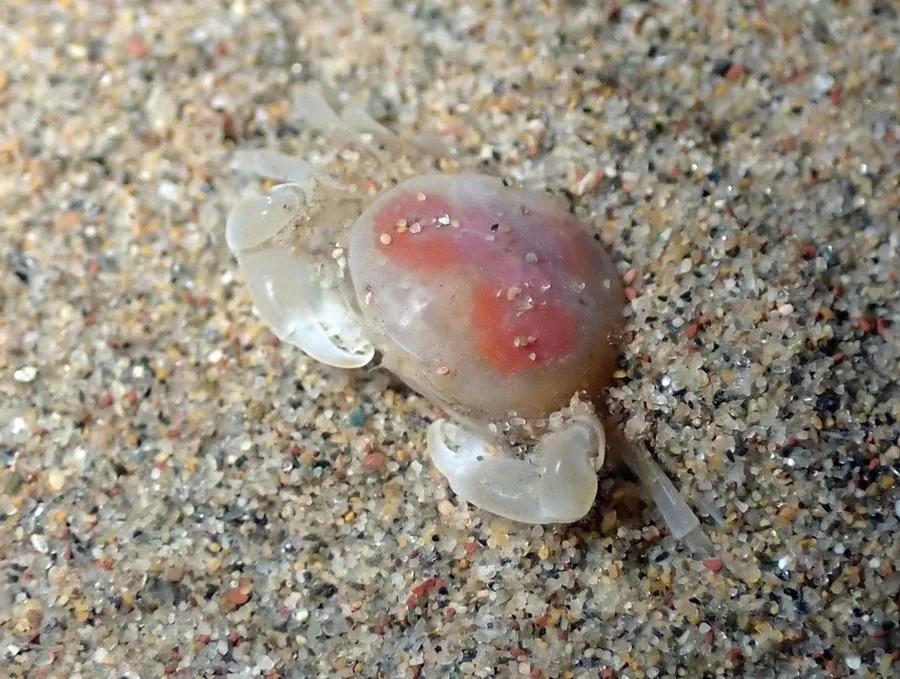

甲壳动物 · 动物界
豆蟹 Pinnotheres pisum

体长仅 1–2 厘米的小型蟹类，常寄居在贻贝、牡蛎等双壳类的壳腔内，以宿主滤食的残渣为食，是著名的共生蟹。
- 分类
- 门节肢动物门纲软甲纲目十足目科豆蟹科属豆蟹属
- 栖息环境
- 贻贝、牡蛎和扇贝等双壳类的壳腔内
- 地理分布
- 欧洲大西洋沿岸和地中海，其他海域也有近缘种
- 保护级别
- IUCN 暂无评估；中国未列入国家重点保护名录
物种志
豆蟹雌蟹头胸甲宽约 1–1.5 cm，身体柔软，呈淡黄或白色，螯足细小，步足短，腹部宽大覆盖头胸甲；雄蟹体型更小，约 0.5 cm，身体较硬，行动灵活。
它分布于欧洲大西洋沿岸和地中海，也见于其他海域，主要寄居在贻贝、牡蛎、扇贝等双壳类的壳腔内，靠宿主滤食时带入的有机碎屑为生。豆蟹的共生关系复杂，通常被认为对宿主影响不大，但密度高时可能影响宿主生长。雌蟹终生留在宿主壳内，雄蟹则在宿主之间游动寻找配偶。它体型小、颜色浅，藏在贝壳里很难被发现，这种生活方式让它省去了觅食和避敌的麻烦，渔民开壳时偶尔会发现它。目前 IUCN 暂无评估；中国未列入国家重点保护名录。
形态与习性
- 食性取食宿主滤食时带入的有机碎屑
- 体型雌蟹头胸甲宽 1–1.5 cm，雄蟹约 0.5 cm
- 识别雌蟹身体柔软，腹部宽大覆盖头胸甲
- 习性雌蟹终生寄居在双壳类壳腔内
- 繁殖雄蟹在宿主之间游动寻找配偶
- 关系与双壳类形成共生，密度高时可能影响宿主
趣味知识
- 豆蟹只有一两厘米大，常常藏在贻贝或牡蛎的壳里。
- 雌豆蟹终生住在贝壳里，雄豆蟹则到处游动寻找配偶。
- 它靠宿主滤食带进来的碎屑过日子，省去了自己觅食的麻烦。